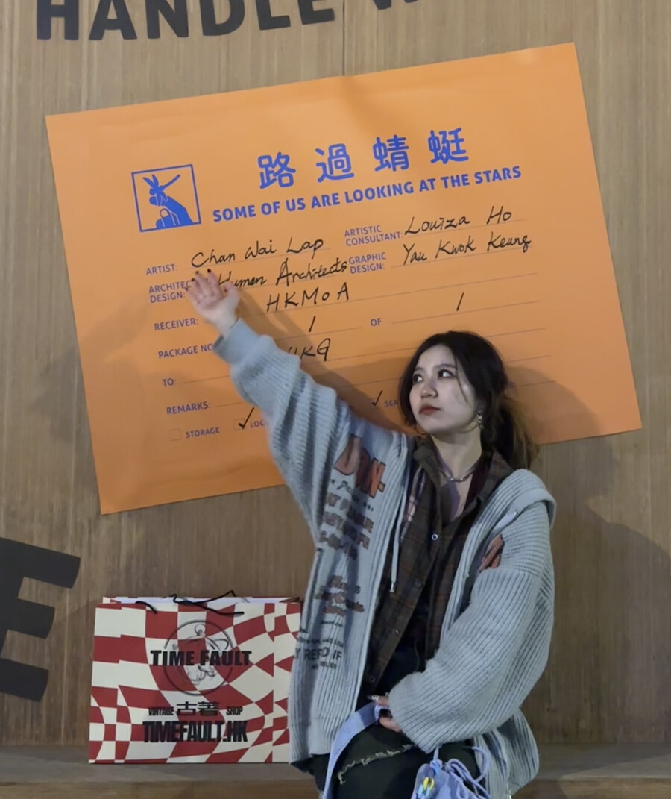
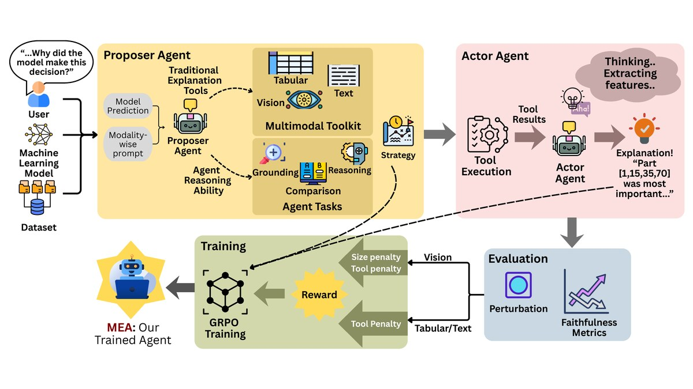
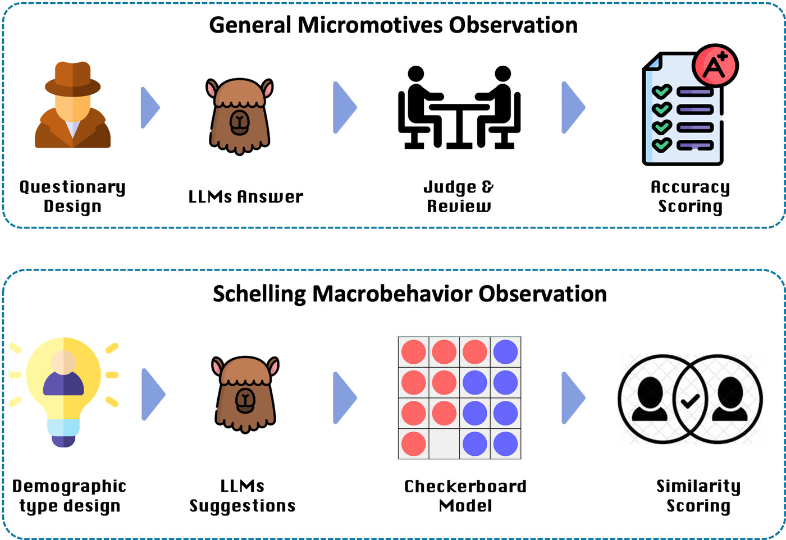
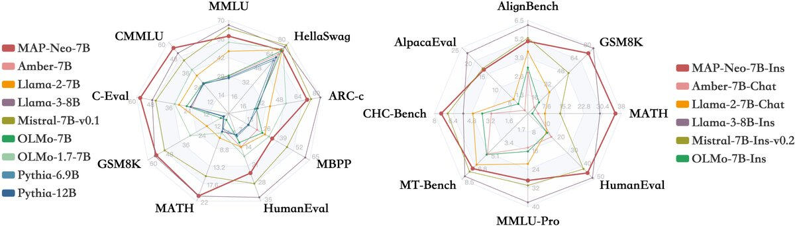
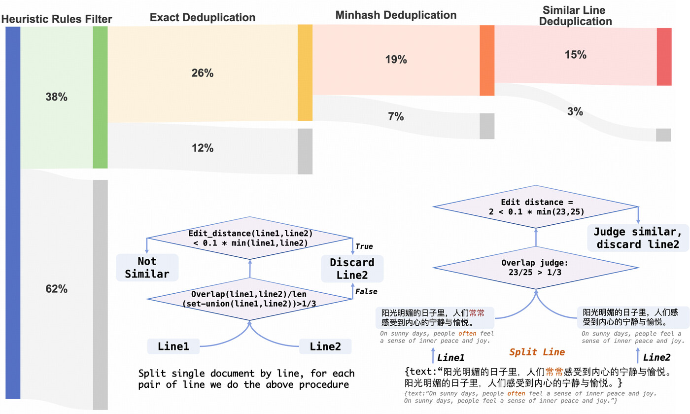
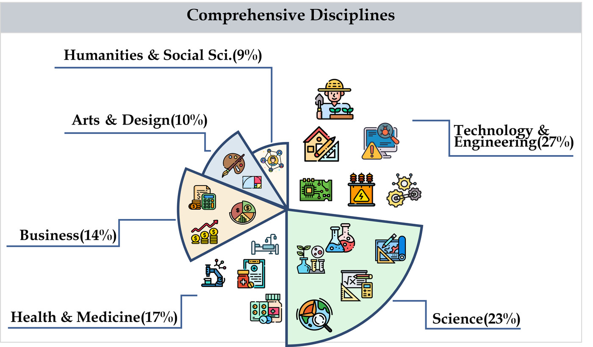
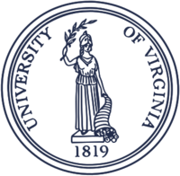
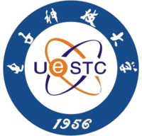
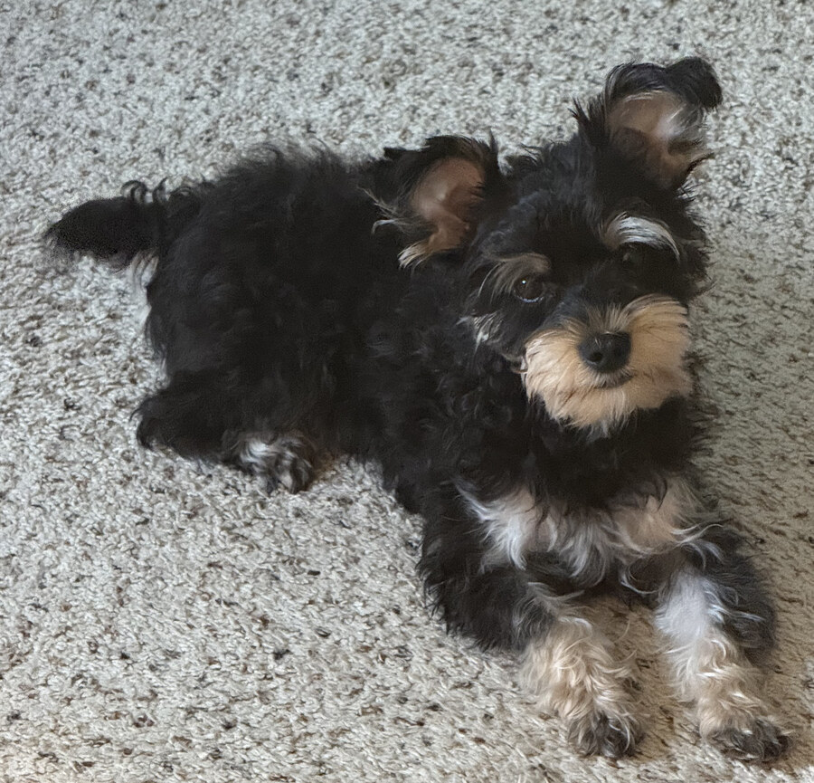

Yuyang Cheng
UVA · School of Data Science
Yuyang Cheng
PhD Student · UVA School of Data Science · Advised by Prof. Chirag Agarwal
I am a first-year PhD student at the University of Virginia School of Data Science. My research focuses on Trustworthy AI Agents, AI Safety & Interpretability, and Multi-modal Learning. I am particularly interested in building reliable and interpretable AI systems that can be safely deployed in real-world scenarios. Previously, I received my M.Eng. from Peking University and dual B.A./B.Eng. from UESTC.
Research
Publications

MEA: A Reward-Driven Multi-Agent System for Faithful Model Explanations
Under review at International Conference on Learning Representations (ICLR), 2027

Observing Micromotives and Macrobehavior of Large Language Models
In Proceedings of the 14th IJCNLP-AACL, 2025


Chinese Tiny LLM: Pretraining a Chinese-Centric Large Language Model
In Conference on Language Modeling (COLM), 2024

Background
Education

Ph.D. in Data Science
University of Virginia, School of Data Science, Charlottesville, VA
Advisor: Prof. Chirag Agarwal
M.Eng. in Computer Technology
Peking University, School of Software & Microelectronics, Beijing, China

B.A. in Translation & B.Eng. in Computer Science
University of Electronic Science and Technology of China (UESTC), Chengdu, China
GPA: 3.88 / 4.0 · CS GPA: 4.0 / 4.0 · Rank: Top 1 in CS, Top 5 in Translation
Work
Experience
Research Scientist Intern
China Mobile Research Institute, AI & Smart Operations Center · Beijing
Led AI Chatbot personalization; designed a seed-free pipeline to synthesize Chinese user personas for LLM dialogue data with LLM-based consistency filtering.
Research Intern
University of Manchester (Remote) · Advisor: Chenghua Lin
Applied agent-based modeling and NLP to study how algorithmic suggestions amplify societal segregation in large-scale social simulations.
Algorithm Intern
INF Technology (Shanghai) Co., Ltd. · Shanghai
Led Text2SQL task training pipeline; designed RL training phase for pre-trained model; responsible for dataset validation and evaluation.
Field Development Intern
Common Language – Gender Equality NGO · Beijing
Led AI Empowerment Workshops for grassroots nonprofits; applied ML to analyze demographic attitudes toward LGBTQ+ issues in China.
Mar 2024
Research Intern
The Hong Kong University of Science and Technology · Advisor: Jie Fu
Core contributor to MAP-Neo pre-training data pipeline; led data processing for Chinese Tiny LLM; contributed to CMMMU benchmark construction.
Assistant Research Engineer
Beijing Milian Science and Technology Co. · Beijing
Participated in chatbot model construction; built a multi-dimensional evaluation model for Natural Language Generation.
Research Assistant — National Key R&D Program
University of Electronic Science and Technology of China · Advisor: Mengshu Hou
Studied opinion extraction, topic clustering, and sentiment analysis for distributed data systems in manufacturing value chains.
Recognition
Honors & Awards
Outstanding Graduate
University of Electronic Science and Technology of China (UESTC)
Outstanding Students Delegation Team
University of Electronic Science and Technology of China (UESTC)
National Scholarship
UESTC · Ministry of Education, China
National Scholarship
UESTC · Ministry of Education, China
Honorable Mention
Mathematical Contest in Modeling (MCM)
Second Prize
Provincial E-Commerce Competition, Sichuan Province
Get in Touch
Contact
I am actively looking for research internships for Summer 2027. Feel free to reach out about research collaborations, questions about my work, or anything else!
Important
Meet My Dog

Udon
Yorkie
A tiny cloud with legs and a tail that never stops wagging. Every paper deadline is survived thanks to one fluffy face and an unreasonable number of snuggles. 🐾 Most important collaborator, zero co-authored papers.